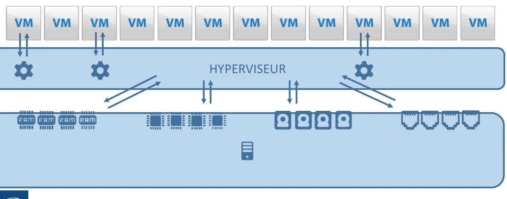
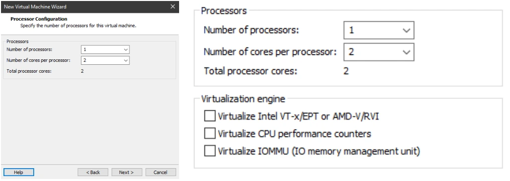
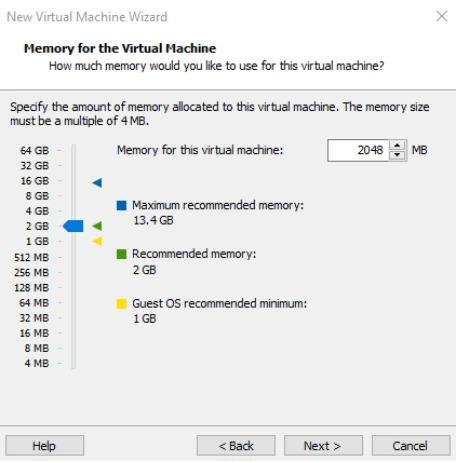
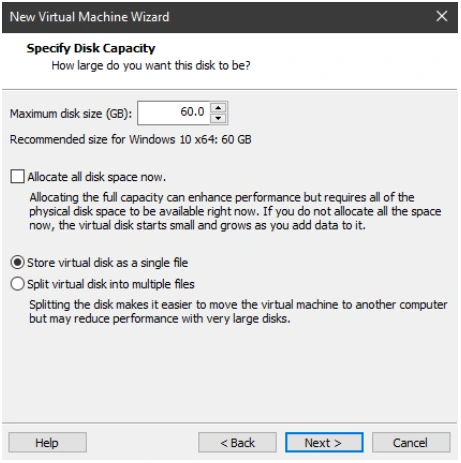
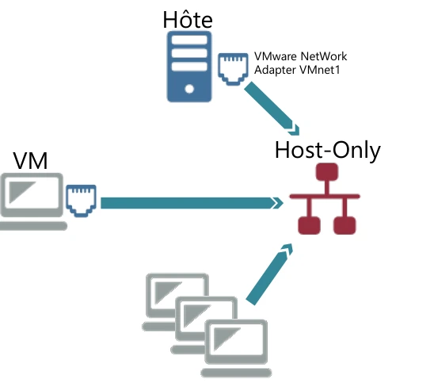
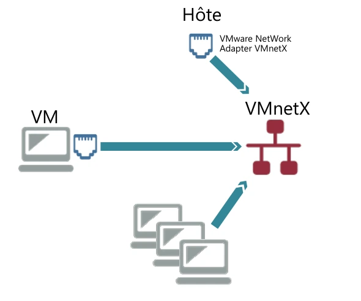
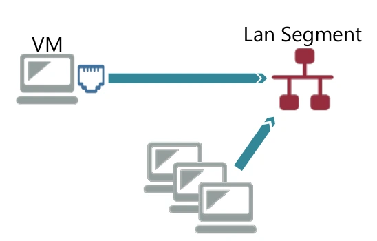
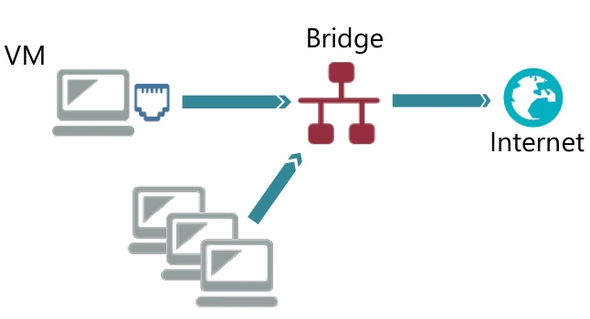
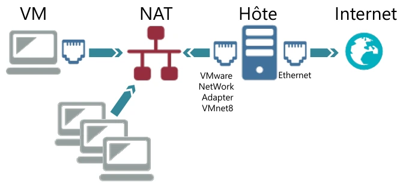
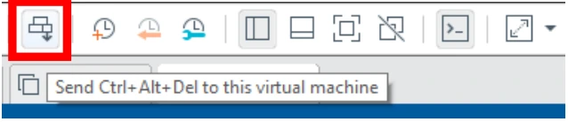

Transcription du document du dossier TSSR, adaptée à une lecture Web. Les compléments pédagogiques figurent dans leur onglet distinct.
Systèmes clients Microsoft — Module additionnel.
Découvrir :
Faire cohabiter plusieurs systèmes invités, isolés et indépendants, grâce aux ressources d’un ordinateur physique, appelé hôte.
| Élément | Description |
|---|---|
| Hôte | Ordinateur physique, serveur ou PC client ; possède les ressources. |
| Système invité | Ordinateur virtuel, ou VM (Virtual Machine) ; possède son propre OS ; utilise les ressources de l’hôte ; défini par un ensemble de fichiers, géré par l’hyperviseur et contenu dans un répertoire d’accueil. |
Les quatre éléments indispensables au bon fonctionnement d’un ordinateur physique :
Une VM possède les mêmes besoins pour fonctionner.
Autres besoins : lecteur DVD / stockage externe ; carte graphique ; carte son ; firmware.
Le schéma place plusieurs VM au-dessus de l’HYPERVISEUR, lui-même au-dessus des ressources matérielles.

Attribution des ressources CPU. Les captures présentent le nombre de processeurs, le nombre de cœurs par processeur, le nombre total de cœurs, ainsi que les options du moteur de virtualisation.


La capture montre les choix d’allocation de l’espace disque et de stockage dans un seul fichier ou plusieurs fichiers.
La VM peut communiquer avec :
Pour cela, elle doit être connectée à un switch.

Les switchs sont virtuels : Host-Only ; VMnet et Lan Segment ; Bridge ; NAT (translation d’adresse).
Le schéma relie les VM au switch Host-Only et à l’hôte au moyen de VMware Network Adapter VMnet1.
Le schéma relie les VM au switch VMnetX et à l’hôte au moyen de VMware Network Adapter VMnetX.


Les switchs sont virtuels : Host-Only ; VMnet et Lan Segment ; Bridge ; NAT (translation d’adresse).
Le schéma Lan Segment relie plusieurs VM au même switch virtuel.
Le schéma de maquette relie quatre ensembles, Serveurs, Administratif, Usine et Imprimantes, à un routeur virtuel par des switchs distincts.

Les switchs sont virtuels : Host-Only ; VMnet et Lan Segment ; Bridge ; NAT (translation d’adresse).
Le schéma relie les VM au switch Bridge, puis à Internet.
Le schéma relie les VM au switch NAT, puis à l’hôte et à Internet. L’interface virtuelle côté hôte est VMware Network Adapter VMnet8 ; l’interface vers Internet est Ethernet.



| Opération | Méthodes |
|---|---|
| Importer | Possibilité d’utiliser des VM existantes : ouvrir (Open) une VM depuis son dossier d’accueil ; importer une VM depuis son archive .ovf ou .ova. |
| Exporter | Sauvegarder votre VM dans son état actuel pour la réutiliser plus tard : en copiant son dossier d’accueil ; en l’exportant dans une archive .ovf ou .ova. |